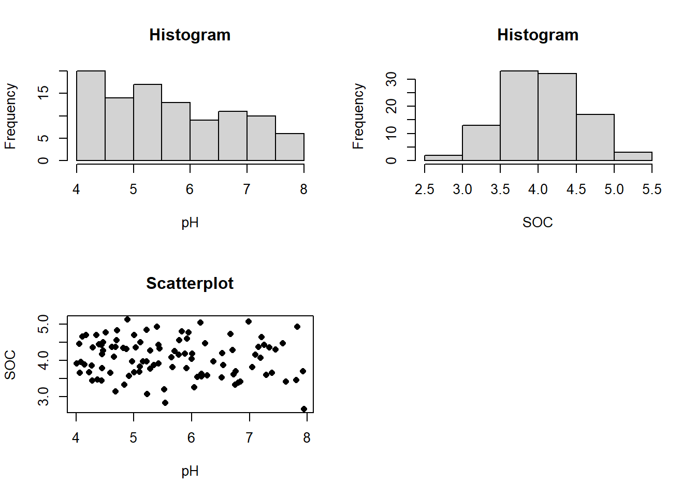

mass<-10002 Data Types
Preamble: Objects and object names in R
- Data are objects in R
- Data objects are assigned names
- We manipulate named objects in R
Introduction
The objective of this section is to provide information on the topic under consideration, along with examples and exercises. You should be able to work through it in R or R studio. This particular section requires no additional functions or packages to be loaded.
The specific objective of the material in this section is to introduce you to the principal data types and data structures in R. By the end you should have a better understanding of the R scripts, and should be better-placed to start developing and editing scripts yourself. The particular topics we shall cover are:
- Basic data types in R: numeric, character, and logical
- Data structures: vectors.
- Factors
- Data structures: Matrices, making matrices, matrix operations
- Data structures: Dataframes
- Data structures: Lists
The principal data types in R are numeric, character, factor and logical. There are others, but these are the main ones.
- A datum of type
numericis a numerical value, such as a soil pH value. - A datum of type
characteris a string of characters, such as the name of an experiment. - A datum of type
factoris the label for a set of treatments or categories which we might use in an analysis of variance.
- A datum of type
logicaltakes valuesTRUEorFALSE
Numeric data
Scalar:
Before going into details of data types, we introduce the simplest data type in R, the scalar. A scalar is a single value of some variable, e.g. the value 42, or the name "Bert".
We can make a simple scalar value using the <- “assign” arrow in R. Assignment is simply the association of a name (mass) with an object (the value 1000).
This is a numeric scalar value. We can then use the print command to see the value of the scalar
print(mass)[1] 1000We can then do simple mathematical manipulations with a numeric scalar value. For example, the following will convert the mass, if this is in grams, to kg
mass_kg <- mass/1000so you can see that the back-slash / denotes division of the value to the left by the value to the right. As in most computer languages * denotes multiply, so to convert mass to milligrams we would do the following
mass_mg<-mass*1000Here are some simple operations which we can perform on a numeric scalar in R using inbuilt functions
Square root
sroot_mass<-sqrt(mass)Logarithm (natural or Napierian logarithm to base e)
log_mass<-log(mass)Raising to a power
mass_squared<-mass^2Character data
A character scalar is just a string of characters, for example, the name of a treatment
tname<-"Mulched"It can be useful to use character scalars, as they can appear in commands such as those for data plots, and you can assign the value once, so, for example, the following commands would create a pane of three graphs based on two variables, (here on some random data). In each plot command ("plot" and "hist") "xlab= " specifies the name on the x-axis label, and similarly "ylab=" for the y-axis. One can put the label name in directly here, xlab="pH", for example, but we can also put a character scalar here which has been given a value elswhere e.g.:
#Assign variable names
xname<-"pH"
yname<-"SOC"
#Create a pane of four plots
par(mfrow=c(2,2))
#Create some random data
x<-runif(100,4,8)
y<-rnorm(100,4,0.5)
#Create the plots
hist(x,xlab=xname,main="Histogram")
hist(y,xlab=yname,main="Histogram")
plot(x,y,xlab=xname,ylab=yname,pch=16,main="Scatterplot")
# Reset the plot window
par(mfrow=c(1,1))
If you were using the script to produce such plots from various variables you can see how using a character scalar saves you from having to type the same variable name into the function for each plot. Changing it once at the top ensures that you get the correct name in each case.
Using "paste" to combine character variables.
Imagine that I had a character scalar that denotes the block to which an experimental plot belongs in a RCBD experiment, and another one that denotes the treatment:
block<-"Block1"
treatment<-"CA"I can make a plot name by combining these two using paste. The "sep" term allows me to specify the separator between the two scalars:
plot_lab<-paste(block,treatment,sep="_")
print(plot_lab)[1] "Block1_CA"Logical data
A logical scalar takes the value TRUE or FALSE. An R command which states some relation between two variables will have a logical value. For example, let us create two numeric scalars
three<-3
five<-5Now the R statement (three < five) will take the value TRUE, because the value of "three" is less than the value of "five", so
three_lt_five<-(three < five)
print(three_lt_five)[1] TRUEthe command below will show that it is not the case that three<three
three_lt_three<-(three < three)
print(three_lt_three)[1] FALSEbut <= (less than or equal to) gives us a different outcome
three_le_three<-(three <= three)
print(three_le_three)[1] TRUESome other useful “logical connectives” are == for "equal to" and != for "not equal to" and, of course, > for "greater than" and >= for “greater than or equal to”.
Logical variables can be the subject of logical functions, notably "if .. then" Consider the example below
soil_pH <- 4
if(soil_pH < 5.5) {
management_option <- "Lime"
}else{
management_option<-"No_lime"
}In the script above if soil_pH is less than 5.5 then the scalar management_option will be given the character value "Lime", otherwise it will be given the value "No_lime".
time <- 12.00
if(time < 12) {
learning <- "continue"
}else{
learning_option <- "take a break"
}In the script above if time is less than 12.00 then the scalar learning option will be given the character value "continue", otherwise it will be given the value "take a break".
A logical variable can be defined on the basis of more than one logical condition, this can be done using the conditionals & for "and", | for "or" .&& and || are sometimes appliedto vectors of logical variables. Here is an example. We define three numeric scalars sand, silt and clay as the percent by mass of sand, silt and clay-sized particles in soil.
sand <- 10
silt <- 20
clay <- 70first, check that the values are consistent
consistent_particle_size <- ((sand + silt + clay) == 100)
print(consistent_particle_size)[1] TRUEThe USDA soil texture class Clay contains soils with more than 40% clay AND less than 40% silt and less than 45% sand, so we can determine whether or not our soil belongs to class clay as follows
is_clay <- (clay>40) | (silt<=40) | (sand<=45)
print(is_clay)[1] TRUE